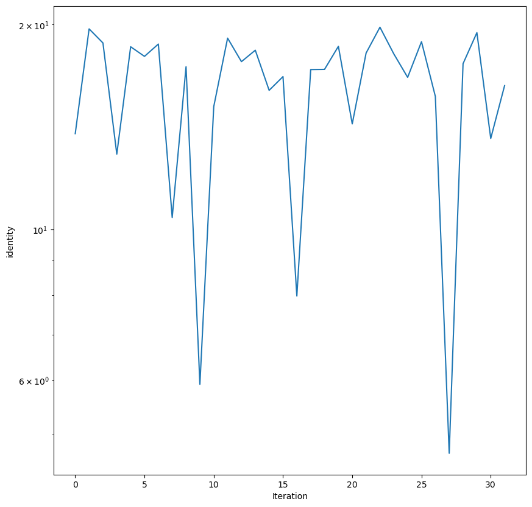
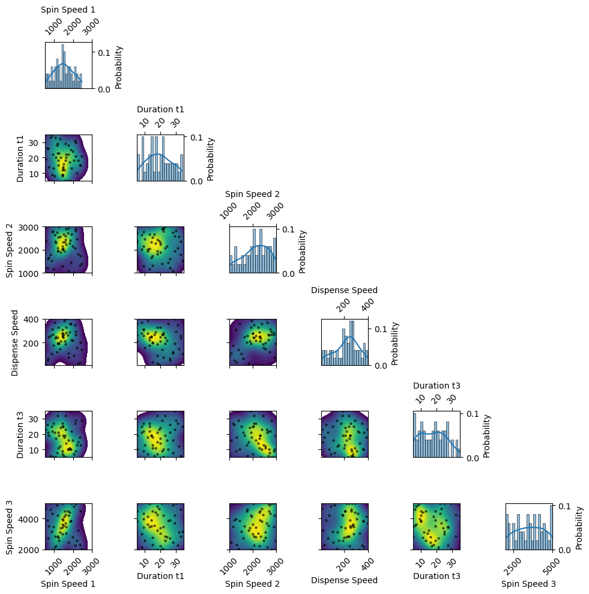
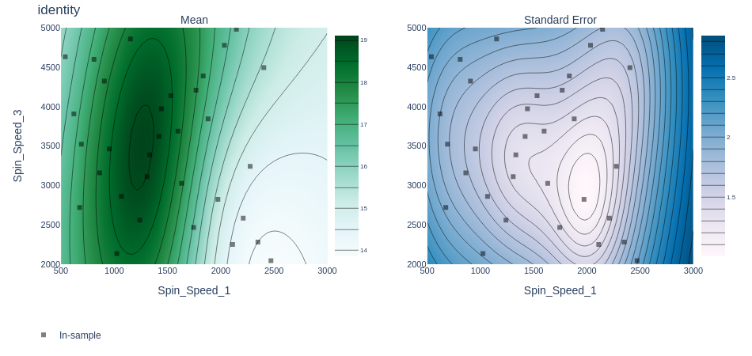
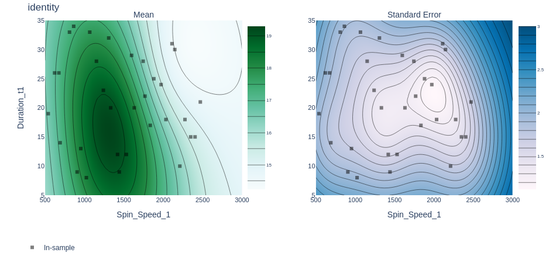
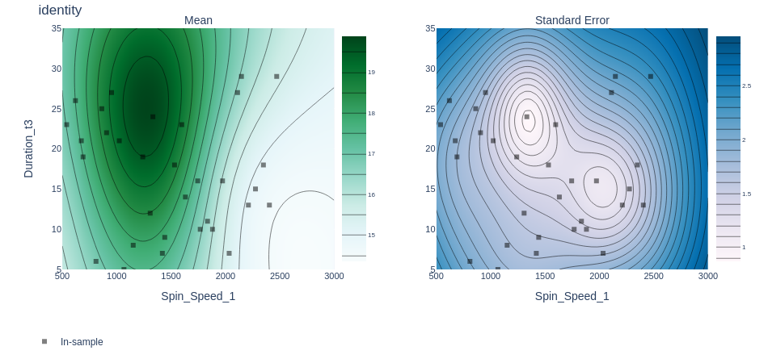
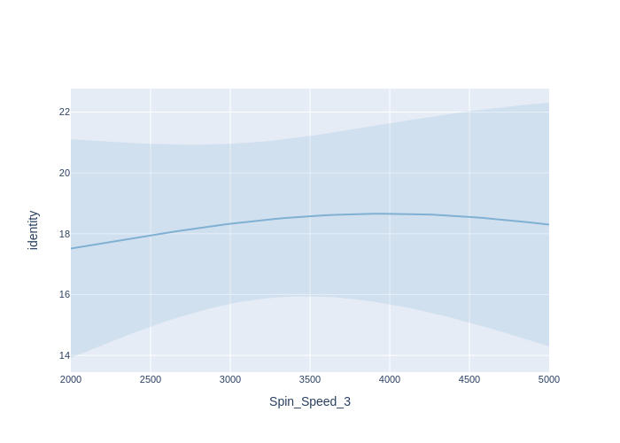
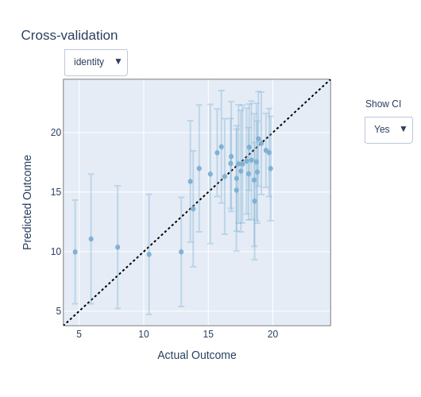
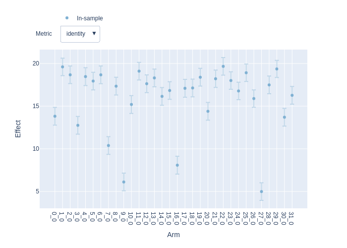

Design of Experiments to optimize perovskite solar cells efficiency
Version 1.0.0 (c) Vincent M. Le Corre, Larry Lueer, i-MEET 2021-2023
This notebook is made to use BOAR to design experiments. Here, we show how to load some data from a presampling, and how to use BOAR to suggest the next set of experiment using Bayesian optimization. The goal here is to optimize the processing conditions for a perovskite solar cell to maximize the power conversion efficiency (PCE).
Note: The data used here is real data generated in the i-MEET and HI-ERN labs at the university of Erlangen-Nuremberg (FAU) by Jiyun Zang. The data is not published yet, and is only used here for demonstration purposes. For more information, please contact us.
[1]:
# Activate matplotlib widgets
# %matplotlib inline
# comment the next line if you are on the jupyterhub server
# %matplotlib widget
# %matplotlib notebook
import plotly.io as pio # comment out to only render png
pio.renderers.default = 'png'
# Import libraries
import sys,os,types,copy
import warnings
import pandas as pd
warnings.filterwarnings('ignore') # comment this out to see warnings
# Import boar
sys.path.append('../') # comment out if the Notebook is in the Notebooks folder
from boar import *
from boar.core.optimization_botorch import *
# import additional libraries from Ax
from ax.utils.notebook.plotting import render, init_notebook_plotting # for plotting in notebook
from ax.plot.slice import plot_slice
from ax.plot.scatter import interact_fitted,plot_objective_vs_constraints,tile_fitted
from ax.modelbridge.cross_validation import cross_validate
from ax.plot.contour import interact_contour
from ax.plot.diagnostic import interact_cross_validation
from ax.plot.pareto_utils import compute_posterior_pareto_frontier
from ax.plot.pareto_frontier import plot_pareto_frontier
# Import homemade package by VLC
# import boar.SIMsalabim_utils.plot_settings_screen # to set default plot settings
[2]:
# Define the path to the data
curr_dir = os.getcwd() # current directory
res_dir = os.path.join(os.path.abspath('../'),'temp') # path to the results directory
data_dir = os.path.join(os.path.abspath('../'),'Example_Data')
[3]:
names =['No.', 'Spin_Speed_1', 'Duration_t1', 'Spin_Speed_2', 'Dispense_Speed','Duration_t3', 'Spin_Speed_3', 'Pmax']
df = pd.read_excel(os.path.join(data_dir,'Jiyun','Inital Data Set LHS + Devices Results.xlsx'),'First Round',skiprows=[0,2],usecols=[0,3,4,5,6,7,10,17],names=names)
df = df.dropna()
df = df.reset_index(drop=True)
# print stats on the data
print(df.describe())
No. Spin_Speed_1 Duration_t1 Spin_Speed_2 Dispense_Speed \
count 32.000000 32.000000 32.000000 32.000000 32.000000
mean 16.500000 1500.784375 21.568438 1997.100625 204.753750
std 9.380832 583.231977 7.935312 587.607149 114.860663
min 1.000000 540.030000 8.580000 1021.640000 16.030000
25% 8.750000 1007.037500 15.107500 1513.842500 107.287500
50% 16.500000 1487.390000 21.350000 1985.235000 208.160000
75% 24.250000 1988.642500 28.302500 2488.645000 294.430000
max 32.000000 2471.680000 34.340000 2993.560000 396.430000
Duration_t3 Spin_Speed_3 Pmax
count 32.000000 32.000000 32.000000
mean 17.492812 3502.554375 15.980469
std 7.267707 878.453420 3.871971
min 5.550000 2046.930000 4.690000
25% 11.432500 2796.907500 14.939000
50% 17.435000 3493.705000 17.266000
75% 23.390000 4237.402500 18.562750
max 29.390000 4981.540000 19.824000
[4]:
params_names = names[1:-1]
target_names = [names[-1]]
df_filtered = copy.deepcopy(df[params_names+target_names])
df_filtered = df_filtered.drop_duplicates()
df_filtered = df_filtered.dropna()
dic = {'x':[],'y_0':[],'ydyn_0':1,'y_1':[],'ydyn_1':1}
for num in range(len(df_filtered)):
dic['x'].append(df_filtered[params_names].iloc[num].values.tolist())
dic['y_0'].append(df_filtered[target_names[0]].iloc[num])
# save to res_dir
with open(os.path.join(res_dir,'old_XY.json'), 'w') as fp:
json.dump(dic, fp)
print(dic)
{'x': [[2404.3, 15.37, 1745.24, 203.73, 13.43, 4494.19], [1835.67, 17.26, 2289.07, 289.2, 11.71, 4389.66], [1067.9, 33.77, 2352.58, 235.32, 5.55, 2861.68], [2276.03, 18.09, 1821.08, 26.02, 15.74, 3241.99], [2147.06, 30.31, 2816.31, 290.32, 29.06, 4981.54], [1152.66, 28.88, 2734.96, 122.63, 8.57, 4856.11], [1240.99, 23.85, 2993.56, 190.72, 19.98, 2560.64], [2471.68, 21.86, 1394.98, 138.38, 29.39, 2046.93], [907.4, 9.36, 2766.28, 314.87, 22.86, 4323.36], [2034.13, 18.67, 1021.64, 90.9, 7.89, 4776.24], [540.03, 19.25, 2383.83, 16.03, 23.23, 4632.76], [1532.37, 12.86, 1955.23, 383.93, 18.06, 4137.02], [1024.8, 8.58, 2631.08, 367.72, 21.69, 2135.81], [1768.01, 22.92, 2927.6, 77.78, 10.6, 4208.75], [1598.13, 29.16, 2592.42, 396.43, 23.87, 3688.4], [691.46, 14.32, 1661.51, 248.43, 19.54, 3523.45], [1745.39, 28.11, 1098.41, 108.1, 16.43, 2467.57], [2111.73, 31.26, 2065.44, 349.36, 27.79, 2251.41], [621.02, 26.31, 1221.45, 51.78, 26.15, 3907.48], [1442.41, 9.97, 1297.14, 306.76, 9.05, 3972.69], [810.2, 33.24, 1776.59, 258.82, 6.39, 4599.99], [1308.04, 32.43, 2558.77, 146.55, 12.7, 3111.18], [1333.17, 20.49, 1878.83, 212.59, 24.7, 3386.13], [863.48, 34.34, 1535.26, 104.85, 25.37, 3160.77], [675.45, 26.72, 1604.13, 66.24, 21.09, 2720.67], [1420.15, 12.15, 2015.24, 277.29, 7.06, 3621.27], [1973.48, 24.8, 2137.16, 218.5, 16.81, 2822.32], [2349.2, 15.71, 1315.5, 35.69, 18.83, 2282.89], [2211.41, 10.56, 2465.27, 156.76, 13.6, 2585.89], [1632.37, 20.84, 2233.62, 328.26, 14.8, 3025.95], [1881.23, 25.54, 1449.59, 360.46, 10.19, 3843.04], [953.75, 13.21, 1167.45, 177.7, 27.64, 3463.96]], 'y_0': [13.83, 19.712, 18.797, 12.903, 18.556, 17.962, 18.726, 10.414, 17.342, 5.922, 15.154, 19.105, 17.644, 18.34, 16.013, 16.773, 7.984, 17.178, 17.19, 18.583, 14.294, 18.165, 19.824, 18.115, 16.732, 18.876, 15.688, 4.69, 17.522, 19.463, 13.608, 16.27], 'ydyn_0': 1, 'y_1': [], 'ydyn_1': 1}
Define the free parameters to be optimized
[5]:
params = []
Spin_Speed_1 = Fitparam(name = 'Spin_Speed_1', val = 1000, lims = [500, 3000], relRange = 1, range_type = 'lin',
lim_type = 'absolute',optim_type='lin', display_name = 'Spin Speed 1', unit = 'RPM',val_type='int',rescale=False)
params.append(Spin_Speed_1)
Duration_t1 = Fitparam(name = 'Duration_t1', val = 10, lims = [5, 35], relRange = 1, range_type = 'lin',
lim_type = 'absolute',optim_type='lin', display_name = 'Duration t1', unit = 's',val_type='int'
,rescale=False)
params.append(Duration_t1)
Spin_Speed_2 = Fitparam(name = 'Spin_Speed_2', val = 1000, lims = [1000, 3000], relRange = 1, range_type = 'lin',
lim_type = 'absolute',optim_type='lin', display_name = 'Spin Speed 2', unit = 'RPM',val_type='int'
,rescale=False)
params.append(Spin_Speed_2)
Dispense_Speed = Fitparam(name = 'Dispense_Speed', val = 100, lims = [10, 400], relRange = 1, range_type = 'lin',
lim_type = 'absolute',optim_type='lin', display_name = 'Dispense Speed', unit = '',val_type='int'
,rescale=False)
params.append(Dispense_Speed)
Duration_t3 = Fitparam(name = 'Duration_t3', val = 10, lims = [5, 35], relRange = 1, range_type = 'lin',
lim_type = 'absolute',optim_type='lin', display_name = 'Duration t3', unit = 's',val_type='int'
,rescale=False)
params.append(Duration_t3)
Spin_Speed_3 = Fitparam(name = 'Spin_Speed_3', val = 1000, lims = [2000, 5000], relRange = 1, range_type = 'lin',
lim_type = 'absolute',optim_type='lin', display_name = 'Spin Speed 3', unit = 'RPM',val_type='int',rescale=False)
params.append(Spin_Speed_3)
[6]:
# create an excel file with len(params) columns and nb_new_exp rows filled with nan
nb_new_exp = 18
dat_array = np.zeros((nb_new_exp, len(params))).tolist()
# replace all with 'nan'
for i in range(len(dat_array)):
for j in range(len(dat_array[i])):
dat_array[i][j] = 'nan'
pnames = [ p.name for p in params ]
df = pd.DataFrame(dat_array, columns=pnames)
df.to_excel(os.path.join(res_dir,'BOAR_Exp.xlsx'), index=False)
df2 = pd.read_excel(os.path.join(res_dir,'BOAR_Exp.xlsx'))
print(df2)
def exp_to_df(X,params):
pass
Spin_Speed_1 Duration_t1 Spin_Speed_2 Dispense_Speed Duration_t3 \
0 NaN NaN NaN NaN NaN
1 NaN NaN NaN NaN NaN
2 NaN NaN NaN NaN NaN
3 NaN NaN NaN NaN NaN
4 NaN NaN NaN NaN NaN
5 NaN NaN NaN NaN NaN
6 NaN NaN NaN NaN NaN
7 NaN NaN NaN NaN NaN
8 NaN NaN NaN NaN NaN
9 NaN NaN NaN NaN NaN
10 NaN NaN NaN NaN NaN
11 NaN NaN NaN NaN NaN
12 NaN NaN NaN NaN NaN
13 NaN NaN NaN NaN NaN
14 NaN NaN NaN NaN NaN
15 NaN NaN NaN NaN NaN
16 NaN NaN NaN NaN NaN
17 NaN NaN NaN NaN NaN
Spin_Speed_3
0 NaN
1 NaN
2 NaN
3 NaN
4 NaN
5 NaN
6 NaN
7 NaN
8 NaN
9 NaN
10 NaN
11 NaN
12 NaN
13 NaN
14 NaN
15 NaN
16 NaN
17 NaN
Start the optimization
[7]:
# Define the targets and the model for the TM problem
X_dimensions = ['_']
y_dimension = 'Pmax'
target = {'model':exp_to_df,'target_name':'Pmax','minimize':False,
'data':{'X':[0],'y':[0],'X_dimensions':X_dimensions,'X_units':['V',''],'y_dimension':y_dimension,'y_unit':'mW cm$^{-2}$'}
,'target_weight':1, 'weight':1}
targets = [target]
obj_type='identity'
loss='linear'
threshold=[18]
mo = MooBOtorch(params=params, targets= targets) # initialize the optimization object
mo.warmstart = 'recall'
mo.parallel = False # needed if number of cores is lower than number of CPU - 1 to ensure we output the right number of points
# mo.SaveOldXY2file = os.path.join(res_dir,'old_XY.json')
mo.Path2OldXY = os.path.join(res_dir,'old_XY.json')
# mo.parameter_constraints = [f'{stepsize_fraction}*Cs_fraction + {stepsize_fraction}*Fa_fraction <= 1']
# Define custom evaluation function
def evaluate_custom(self,px,obj_type,loss,threshold=1,is_MOO=True):
pass
mo.evaluate_custom = types.MethodType(evaluate_custom, mo) # add the method to the object FullyBayesianMOO
kwargs_posterior = {'Nres':10,'Ninteg':1e3,'logscale':True,'vmin':1e-100,'zoom':0,'min_prob':1e-40,'clear_axis':False,'True_values':None,'show_points':True,'savefig':False,'figname':'param_posterior','full_grid':True,'randomize':True}
ax_client = mo.BoTorchOpti(n_jobs=[nb_new_exp], n_step_points = [nb_new_exp], models=['GPEI'],obj_type=obj_type,loss=loss,threshold=threshold,use_CUDA=True,is_MOO=False,verbose=True,show_posterior=False,kwargs_posterior=kwargs_posterior,use_custom_func=True,suggest_only=True)
[INFO 09-26 08:39:45] ax.service.ax_client: Starting optimization with verbose logging. To disable logging, set the `verbose_logging` argument to `False`. Note that float values in the logs are rounded to 6 decimal points.
[INFO 09-26 08:39:45] ax.service.utils.instantiation: Created search space: SearchSpace(parameters=[RangeParameter(name='Spin_Speed_1', parameter_type=INT, range=[500, 3000]), RangeParameter(name='Duration_t1', parameter_type=INT, range=[5, 35]), RangeParameter(name='Spin_Speed_2', parameter_type=INT, range=[1000, 3000]), RangeParameter(name='Dispense_Speed', parameter_type=INT, range=[10, 400]), RangeParameter(name='Duration_t3', parameter_type=INT, range=[5, 35]), RangeParameter(name='Spin_Speed_3', parameter_type=INT, range=[2000, 5000])], parameter_constraints=[]).
[INFO 09-26 08:39:45] ax.core.experiment: Attached custom parameterizations [{'Spin_Speed_1': 2404, 'Duration_t1': 15, 'Spin_Speed_2': 1745, 'Dispense_Speed': 203, 'Duration_t3': 13, 'Spin_Speed_3': 4494}] as trial 0.
[INFO 09-26 08:39:45] ax.service.ax_client: Completed trial 0 with data: {'identity': (13.83, None)}.
[INFO 09-26 08:39:45] ax.core.experiment: Attached custom parameterizations [{'Spin_Speed_1': 1835, 'Duration_t1': 17, 'Spin_Speed_2': 2289, 'Dispense_Speed': 289, 'Duration_t3': 11, 'Spin_Speed_3': 4389}] as trial 1.
[INFO 09-26 08:39:45] ax.service.ax_client: Completed trial 1 with data: {'identity': (19.712, None)}.
[INFO 09-26 08:39:45] ax.core.experiment: Attached custom parameterizations [{'Spin_Speed_1': 1067, 'Duration_t1': 33, 'Spin_Speed_2': 2352, 'Dispense_Speed': 235, 'Duration_t3': 5, 'Spin_Speed_3': 2861}] as trial 2.
[INFO 09-26 08:39:45] ax.service.ax_client: Completed trial 2 with data: {'identity': (18.797, None)}.
[INFO 09-26 08:39:45] ax.core.experiment: Attached custom parameterizations [{'Spin_Speed_1': 2276, 'Duration_t1': 18, 'Spin_Speed_2': 1821, 'Dispense_Speed': 26, 'Duration_t3': 15, 'Spin_Speed_3': 3241}] as trial 3.
[INFO 09-26 08:39:45] ax.service.ax_client: Completed trial 3 with data: {'identity': (12.903, None)}.
[INFO 09-26 08:39:45] ax.core.experiment: Attached custom parameterizations [{'Spin_Speed_1': 2147, 'Duration_t1': 30, 'Spin_Speed_2': 2816, 'Dispense_Speed': 290, 'Duration_t3': 29, 'Spin_Speed_3': 4981}] as trial 4.
[INFO 09-26 08:39:45] ax.service.ax_client: Completed trial 4 with data: {'identity': (18.556, None)}.
[INFO 09-26 08:39:45] ax.core.experiment: Attached custom parameterizations [{'Spin_Speed_1': 1152, 'Duration_t1': 28, 'Spin_Speed_2': 2734, 'Dispense_Speed': 122, 'Duration_t3': 8, 'Spin_Speed_3': 4856}] as trial 5.
[INFO 09-26 08:39:45] ax.service.ax_client: Completed trial 5 with data: {'identity': (17.962, None)}.
[INFO 09-26 08:39:45] ax.core.experiment: Attached custom parameterizations [{'Spin_Speed_1': 1240, 'Duration_t1': 23, 'Spin_Speed_2': 2993, 'Dispense_Speed': 190, 'Duration_t3': 19, 'Spin_Speed_3': 2560}] as trial 6.
[INFO 09-26 08:39:45] ax.service.ax_client: Completed trial 6 with data: {'identity': (18.726, None)}.
[INFO 09-26 08:39:45] ax.core.experiment: Attached custom parameterizations [{'Spin_Speed_1': 2471, 'Duration_t1': 21, 'Spin_Speed_2': 1394, 'Dispense_Speed': 138, 'Duration_t3': 29, 'Spin_Speed_3': 2046}] as trial 7.
[INFO 09-26 08:39:45] ax.service.ax_client: Completed trial 7 with data: {'identity': (10.414, None)}.
[INFO 09-26 08:39:45] ax.core.experiment: Attached custom parameterizations [{'Spin_Speed_1': 907, 'Duration_t1': 9, 'Spin_Speed_2': 2766, 'Dispense_Speed': 314, 'Duration_t3': 22, 'Spin_Speed_3': 4323}] as trial 8.
[INFO 09-26 08:39:45] ax.service.ax_client: Completed trial 8 with data: {'identity': (17.342, None)}.
[INFO 09-26 08:39:45] ax.core.experiment: Attached custom parameterizations [{'Spin_Speed_1': 2034, 'Duration_t1': 18, 'Spin_Speed_2': 1021, 'Dispense_Speed': 90, 'Duration_t3': 7, 'Spin_Speed_3': 4776}] as trial 9.
[INFO 09-26 08:39:45] ax.service.ax_client: Completed trial 9 with data: {'identity': (5.922, None)}.
[INFO 09-26 08:39:45] ax.core.experiment: Attached custom parameterizations [{'Spin_Speed_1': 540, 'Duration_t1': 19, 'Spin_Speed_2': 2383, 'Dispense_Speed': 16, 'Duration_t3': 23, 'Spin_Speed_3': 4632}] as trial 10.
[INFO 09-26 08:39:45] ax.service.ax_client: Completed trial 10 with data: {'identity': (15.154, None)}.
[INFO 09-26 08:39:45] ax.core.experiment: Attached custom parameterizations [{'Spin_Speed_1': 1532, 'Duration_t1': 12, 'Spin_Speed_2': 1955, 'Dispense_Speed': 383, 'Duration_t3': 18, 'Spin_Speed_3': 4137}] as trial 11.
[INFO 09-26 08:39:45] ax.service.ax_client: Completed trial 11 with data: {'identity': (19.105, None)}.
[INFO 09-26 08:39:45] ax.core.experiment: Attached custom parameterizations [{'Spin_Speed_1': 1024, 'Duration_t1': 8, 'Spin_Speed_2': 2631, 'Dispense_Speed': 367, 'Duration_t3': 21, 'Spin_Speed_3': 2135}] as trial 12.
[INFO 09-26 08:39:45] ax.service.ax_client: Completed trial 12 with data: {'identity': (17.644, None)}.
[INFO 09-26 08:39:45] ax.core.experiment: Attached custom parameterizations [{'Spin_Speed_1': 1768, 'Duration_t1': 22, 'Spin_Speed_2': 2927, 'Dispense_Speed': 77, 'Duration_t3': 10, 'Spin_Speed_3': 4208}] as trial 13.
[INFO 09-26 08:39:45] ax.service.ax_client: Completed trial 13 with data: {'identity': (18.34, None)}.
[INFO 09-26 08:39:45] ax.core.experiment: Attached custom parameterizations [{'Spin_Speed_1': 1598, 'Duration_t1': 29, 'Spin_Speed_2': 2592, 'Dispense_Speed': 396, 'Duration_t3': 23, 'Spin_Speed_3': 3688}] as trial 14.
[INFO 09-26 08:39:45] ax.service.ax_client: Completed trial 14 with data: {'identity': (16.013, None)}.
[INFO 09-26 08:39:45] ax.core.experiment: Attached custom parameterizations [{'Spin_Speed_1': 691, 'Duration_t1': 14, 'Spin_Speed_2': 1661, 'Dispense_Speed': 248, 'Duration_t3': 19, 'Spin_Speed_3': 3523}] as trial 15.
[INFO 09-26 08:39:45] ax.service.ax_client: Completed trial 15 with data: {'identity': (16.773, None)}.
[INFO 09-26 08:39:45] ax.core.experiment: Attached custom parameterizations [{'Spin_Speed_1': 1745, 'Duration_t1': 28, 'Spin_Speed_2': 1098, 'Dispense_Speed': 108, 'Duration_t3': 16, 'Spin_Speed_3': 2467}] as trial 16.
[INFO 09-26 08:39:45] ax.service.ax_client: Completed trial 16 with data: {'identity': (7.984, None)}.
[INFO 09-26 08:39:45] ax.core.experiment: Attached custom parameterizations [{'Spin_Speed_1': 2111, 'Duration_t1': 31, 'Spin_Speed_2': 2065, 'Dispense_Speed': 349, 'Duration_t3': 27, 'Spin_Speed_3': 2251}] as trial 17.
[INFO 09-26 08:39:45] ax.service.ax_client: Completed trial 17 with data: {'identity': (17.178, None)}.
[INFO 09-26 08:39:45] ax.core.experiment: Attached custom parameterizations [{'Spin_Speed_1': 621, 'Duration_t1': 26, 'Spin_Speed_2': 1221, 'Dispense_Speed': 51, 'Duration_t3': 26, 'Spin_Speed_3': 3907}] as trial 18.
[INFO 09-26 08:39:45] ax.service.ax_client: Completed trial 18 with data: {'identity': (17.19, None)}.
[INFO 09-26 08:39:45] ax.core.experiment: Attached custom parameterizations [{'Spin_Speed_1': 1442, 'Duration_t1': 9, 'Spin_Speed_2': 1297, 'Dispense_Speed': 306, 'Duration_t3': 9, 'Spin_Speed_3': 3972}] as trial 19.
[INFO 09-26 08:39:45] ax.service.ax_client: Completed trial 19 with data: {'identity': (18.583, None)}.
[INFO 09-26 08:39:45] ax.core.experiment: Attached custom parameterizations [{'Spin_Speed_1': 810, 'Duration_t1': 33, 'Spin_Speed_2': 1776, 'Dispense_Speed': 258, 'Duration_t3': 6, 'Spin_Speed_3': 4599}] as trial 20.
[INFO 09-26 08:39:45] ax.service.ax_client: Completed trial 20 with data: {'identity': (14.294, None)}.
[INFO 09-26 08:39:45] ax.core.experiment: Attached custom parameterizations [{'Spin_Speed_1': 1308, 'Duration_t1': 32, 'Spin_Speed_2': 2558, 'Dispense_Speed': 146, 'Duration_t3': 12, 'Spin_Speed_3': 3111}] as trial 21.
[INFO 09-26 08:39:45] ax.service.ax_client: Completed trial 21 with data: {'identity': (18.165, None)}.
[INFO 09-26 08:39:45] ax.core.experiment: Attached custom parameterizations [{'Spin_Speed_1': 1333, 'Duration_t1': 20, 'Spin_Speed_2': 1878, 'Dispense_Speed': 212, 'Duration_t3': 24, 'Spin_Speed_3': 3386}] as trial 22.
[INFO 09-26 08:39:45] ax.service.ax_client: Completed trial 22 with data: {'identity': (19.824, None)}.
[INFO 09-26 08:39:45] ax.core.experiment: Attached custom parameterizations [{'Spin_Speed_1': 863, 'Duration_t1': 34, 'Spin_Speed_2': 1535, 'Dispense_Speed': 104, 'Duration_t3': 25, 'Spin_Speed_3': 3160}] as trial 23.
[INFO 09-26 08:39:45] ax.service.ax_client: Completed trial 23 with data: {'identity': (18.115, None)}.
[INFO 09-26 08:39:45] ax.core.experiment: Attached custom parameterizations [{'Spin_Speed_1': 675, 'Duration_t1': 26, 'Spin_Speed_2': 1604, 'Dispense_Speed': 66, 'Duration_t3': 21, 'Spin_Speed_3': 2720}] as trial 24.
[INFO 09-26 08:39:45] ax.service.ax_client: Completed trial 24 with data: {'identity': (16.732, None)}.
[INFO 09-26 08:39:45] ax.core.experiment: Attached custom parameterizations [{'Spin_Speed_1': 1420, 'Duration_t1': 12, 'Spin_Speed_2': 2015, 'Dispense_Speed': 277, 'Duration_t3': 7, 'Spin_Speed_3': 3621}] as trial 25.
[INFO 09-26 08:39:45] ax.service.ax_client: Completed trial 25 with data: {'identity': (18.876, None)}.
[INFO 09-26 08:39:45] ax.core.experiment: Attached custom parameterizations [{'Spin_Speed_1': 1973, 'Duration_t1': 24, 'Spin_Speed_2': 2137, 'Dispense_Speed': 218, 'Duration_t3': 16, 'Spin_Speed_3': 2822}] as trial 26.
[INFO 09-26 08:39:45] ax.service.ax_client: Completed trial 26 with data: {'identity': (15.688, None)}.
[INFO 09-26 08:39:45] ax.core.experiment: Attached custom parameterizations [{'Spin_Speed_1': 2349, 'Duration_t1': 15, 'Spin_Speed_2': 1315, 'Dispense_Speed': 35, 'Duration_t3': 18, 'Spin_Speed_3': 2282}] as trial 27.
[INFO 09-26 08:39:45] ax.service.ax_client: Completed trial 27 with data: {'identity': (4.69, None)}.
[INFO 09-26 08:39:45] ax.core.experiment: Attached custom parameterizations [{'Spin_Speed_1': 2211, 'Duration_t1': 10, 'Spin_Speed_2': 2465, 'Dispense_Speed': 156, 'Duration_t3': 13, 'Spin_Speed_3': 2585}] as trial 28.
[INFO 09-26 08:39:45] ax.service.ax_client: Completed trial 28 with data: {'identity': (17.522, None)}.
[INFO 09-26 08:39:45] ax.core.experiment: Attached custom parameterizations [{'Spin_Speed_1': 1632, 'Duration_t1': 20, 'Spin_Speed_2': 2233, 'Dispense_Speed': 328, 'Duration_t3': 14, 'Spin_Speed_3': 3025}] as trial 29.
[INFO 09-26 08:39:45] ax.service.ax_client: Completed trial 29 with data: {'identity': (19.463, None)}.
[INFO 09-26 08:39:45] ax.core.experiment: Attached custom parameterizations [{'Spin_Speed_1': 1881, 'Duration_t1': 25, 'Spin_Speed_2': 1449, 'Dispense_Speed': 360, 'Duration_t3': 10, 'Spin_Speed_3': 3843}] as trial 30.
[INFO 09-26 08:39:45] ax.service.ax_client: Completed trial 30 with data: {'identity': (13.608, None)}.
[INFO 09-26 08:39:45] ax.core.experiment: Attached custom parameterizations [{'Spin_Speed_1': 953, 'Duration_t1': 13, 'Spin_Speed_2': 1167, 'Dispense_Speed': 177, 'Duration_t3': 27, 'Spin_Speed_3': 3463}] as trial 31.
[INFO 09-26 08:39:45] ax.service.ax_client: Completed trial 31 with data: {'identity': (16.27, None)}.
[INFO 09-26 08:39:47] ax.service.ax_client: Generated new trial 32 with parameters {'Spin_Speed_1': 1474, 'Duration_t1': 14, 'Spin_Speed_2': 2324, 'Dispense_Speed': 250, 'Duration_t3': 19, 'Spin_Speed_3': 3910}.
[INFO 09-26 08:39:47] ax.modelbridge.torch: The observations are identical to the last set of observations used to fit the model. Skipping model fitting.
[INFO 09-26 08:39:48] ax.service.ax_client: Generated new trial 33 with parameters {'Spin_Speed_1': 1515, 'Duration_t1': 16, 'Spin_Speed_2': 2676, 'Dispense_Speed': 269, 'Duration_t3': 6, 'Spin_Speed_3': 3552}.
[INFO 09-26 08:39:48] ax.modelbridge.torch: The observations are identical to the last set of observations used to fit the model. Skipping model fitting.
[INFO 09-26 08:39:49] ax.service.ax_client: Generated new trial 34 with parameters {'Spin_Speed_1': 1165, 'Duration_t1': 23, 'Spin_Speed_2': 2063, 'Dispense_Speed': 241, 'Duration_t3': 32, 'Spin_Speed_3': 2863}.
[INFO 09-26 08:39:49] ax.modelbridge.torch: The observations are identical to the last set of observations used to fit the model. Skipping model fitting.
[INFO 09-26 08:39:50] ax.service.ax_client: Generated new trial 35 with parameters {'Spin_Speed_1': 1913, 'Duration_t1': 13, 'Spin_Speed_2': 2671, 'Dispense_Speed': 222, 'Duration_t3': 22, 'Spin_Speed_3': 5000}.
[INFO 09-26 08:39:50] ax.modelbridge.torch: The observations are identical to the last set of observations used to fit the model. Skipping model fitting.
[INFO 09-26 08:39:52] ax.service.ax_client: Generated new trial 36 with parameters {'Spin_Speed_1': 1421, 'Duration_t1': 8, 'Spin_Speed_2': 2021, 'Dispense_Speed': 279, 'Duration_t3': 25, 'Spin_Speed_3': 3002}.
[INFO 09-26 08:39:52] ax.modelbridge.torch: The observations are identical to the last set of observations used to fit the model. Skipping model fitting.
[INFO 09-26 08:39:53] ax.service.ax_client: Generated new trial 37 with parameters {'Spin_Speed_1': 1840, 'Duration_t1': 5, 'Spin_Speed_2': 2401, 'Dispense_Speed': 360, 'Duration_t3': 10, 'Spin_Speed_3': 3825}.
[INFO 09-26 08:39:53] ax.modelbridge.torch: The observations are identical to the last set of observations used to fit the model. Skipping model fitting.
[INFO 09-26 08:39:54] ax.service.ax_client: Generated new trial 38 with parameters {'Spin_Speed_1': 1476, 'Duration_t1': 13, 'Spin_Speed_2': 2036, 'Dispense_Speed': 242, 'Duration_t3': 25, 'Spin_Speed_3': 5000}.
[INFO 09-26 08:39:54] ax.modelbridge.torch: The observations are identical to the last set of observations used to fit the model. Skipping model fitting.
[INFO 09-26 08:39:56] ax.service.ax_client: Generated new trial 39 with parameters {'Spin_Speed_1': 1096, 'Duration_t1': 20, 'Spin_Speed_2': 2295, 'Dispense_Speed': 247, 'Duration_t3': 17, 'Spin_Speed_3': 2231}.
[INFO 09-26 08:39:56] ax.modelbridge.torch: The observations are identical to the last set of observations used to fit the model. Skipping model fitting.
[INFO 09-26 08:39:58] ax.service.ax_client: Generated new trial 40 with parameters {'Spin_Speed_1': 2126, 'Duration_t1': 21, 'Spin_Speed_2': 2903, 'Dispense_Speed': 266, 'Duration_t3': 9, 'Spin_Speed_3': 5000}.
[INFO 09-26 08:39:58] ax.modelbridge.torch: The observations are identical to the last set of observations used to fit the model. Skipping model fitting.
[INFO 09-26 08:39:58] ax.service.ax_client: Generated new trial 41 with parameters {'Spin_Speed_1': 1600, 'Duration_t1': 18, 'Spin_Speed_2': 2444, 'Dispense_Speed': 187, 'Duration_t3': 32, 'Spin_Speed_3': 4233}.
[INFO 09-26 08:39:58] ax.modelbridge.torch: The observations are identical to the last set of observations used to fit the model. Skipping model fitting.
[INFO 09-26 08:39:59] ax.service.ax_client: Generated new trial 42 with parameters {'Spin_Speed_1': 1184, 'Duration_t1': 29, 'Spin_Speed_2': 1946, 'Dispense_Speed': 191, 'Duration_t3': 35, 'Spin_Speed_3': 4204}.
[INFO 09-26 08:39:59] ax.modelbridge.torch: The observations are identical to the last set of observations used to fit the model. Skipping model fitting.
[INFO 09-26 08:40:00] ax.service.ax_client: Generated new trial 43 with parameters {'Spin_Speed_1': 1210, 'Duration_t1': 18, 'Spin_Speed_2': 1933, 'Dispense_Speed': 325, 'Duration_t3': 21, 'Spin_Speed_3': 2000}.
[INFO 09-26 08:40:00] ax.modelbridge.torch: The observations are identical to the last set of observations used to fit the model. Skipping model fitting.
[INFO 09-26 08:40:02] ax.service.ax_client: Generated new trial 44 with parameters {'Spin_Speed_1': 1220, 'Duration_t1': 15, 'Spin_Speed_2': 2546, 'Dispense_Speed': 198, 'Duration_t3': 11, 'Spin_Speed_3': 2783}.
[INFO 09-26 08:40:02] ax.modelbridge.torch: The observations are identical to the last set of observations used to fit the model. Skipping model fitting.
[INFO 09-26 08:40:03] ax.service.ax_client: Generated new trial 45 with parameters {'Spin_Speed_1': 1570, 'Duration_t1': 5, 'Spin_Speed_2': 2329, 'Dispense_Speed': 211, 'Duration_t3': 19, 'Spin_Speed_3': 4466}.
[INFO 09-26 08:40:03] ax.modelbridge.torch: The observations are identical to the last set of observations used to fit the model. Skipping model fitting.
[INFO 09-26 08:40:04] ax.service.ax_client: Generated new trial 46 with parameters {'Spin_Speed_1': 925, 'Duration_t1': 22, 'Spin_Speed_2': 2808, 'Dispense_Speed': 268, 'Duration_t3': 5, 'Spin_Speed_3': 2000}.
[INFO 09-26 08:40:04] ax.modelbridge.torch: The observations are identical to the last set of observations used to fit the model. Skipping model fitting.
[INFO 09-26 08:40:05] ax.service.ax_client: Generated new trial 47 with parameters {'Spin_Speed_1': 1631, 'Duration_t1': 22, 'Spin_Speed_2': 2902, 'Dispense_Speed': 281, 'Duration_t3': 5, 'Spin_Speed_3': 3450}.
[INFO 09-26 08:40:05] ax.modelbridge.torch: The observations are identical to the last set of observations used to fit the model. Skipping model fitting.
[INFO 09-26 08:40:07] ax.service.ax_client: Generated new trial 48 with parameters {'Spin_Speed_1': 1720, 'Duration_t1': 5, 'Spin_Speed_2': 2707, 'Dispense_Speed': 260, 'Duration_t3': 10, 'Spin_Speed_3': 4488}.
[INFO 09-26 08:40:07] ax.modelbridge.torch: The observations are identical to the last set of observations used to fit the model. Skipping model fitting.
[INFO 09-26 08:40:08] ax.service.ax_client: Generated new trial 49 with parameters {'Spin_Speed_1': 1451, 'Duration_t1': 9, 'Spin_Speed_2': 2149, 'Dispense_Speed': 256, 'Duration_t3': 27, 'Spin_Speed_3': 3416}.
[INFO 09-26 08:40:08] ax.modelbridge.generation_strategy: Note that parameter values in dataframe are rounded to 2 decimal points; the values in the dataframe are thus not the exact ones suggested by Ax in trials.
[INFO 09-26 08:40:08] ax.modelbridge.torch: The observations are identical to the last set of observations used to fit the model. Skipping model fitting.
[8]:
# Print the optimized stack structure
for p in mo.params:
if p.val_type != 'str':
print(p.display_name + f' {p.val:.0f} ')
print(p.lims)
else:
print(p.display_name + f' {p.val}')
Spin Speed 1 1333
[500, 3000]
Duration t1 20
[5, 35]
Spin Speed 2 1878
[1000, 3000]
Dispense Speed 212
[10, 400]
Duration t3 24
[5, 35]
Spin Speed 3 3386
[2000, 5000]
[9]:
# get all tried data from the ax_client
triedX = ax_client.generation_strategy.trials_as_df
# print(triedX.tail())
triedY = ax_client.experiment.fetch_data().df
# print(triedY.tail())
# find Trial Status ABANDONED
abandoned_trials = triedX[triedX['Trial Status']=='ABANDONED']
dics = []
for index, row in abandoned_trials.iterrows():
dic_dum = abandoned_trials['Arm Parameterizations'][index]
key = list(dic_dum.keys())[0]
dic = dic_dum[key]
dics.append(dic)
# put in a dataframe
df2try = pd.DataFrame(dics)
# save to excel
df2try.to_excel(os.path.join(res_dir,'BOAR_Exp_2_try.xlsx'), index=False)
[INFO 09-26 08:40:23] ax.modelbridge.generation_strategy: Note that parameter values in dataframe are rounded to 2 decimal points; the values in the dataframe are thus not the exact ones suggested by Ax in trials.
[10]:
# Plot the Pareto front of the test problem
mo.plot_all_objectives(ax_client,logscale=True,figsize=(10,10))

[11]:
# Plot the density of points that were sampled during the optimization process
mo.plot_density(ax_client,figsize=(10,10))

[12]:
# Plot the contour of the objective function for a given target
render(ax_client.get_contour_plot(param_x=params[0].name, param_y=params[-1].name, metric_name=obj_type))
render(ax_client.get_contour_plot(param_x=params[0].name, param_y=params[1].name, metric_name=obj_type))
render(ax_client.get_contour_plot(param_x=params[0].name, param_y=params[-2].name, metric_name=obj_type))
[INFO 09-26 08:40:26] ax.service.ax_client: Retrieving contour plot with parameter 'Spin_Speed_1' on X-axis and 'Spin_Speed_3' on Y-axis, for metric 'identity'. Remaining parameters are affixed to the middle of their range.

[INFO 09-26 08:40:27] ax.service.ax_client: Retrieving contour plot with parameter 'Spin_Speed_1' on X-axis and 'Duration_t1' on Y-axis, for metric 'identity'. Remaining parameters are affixed to the middle of their range.

[INFO 09-26 08:40:28] ax.service.ax_client: Retrieving contour plot with parameter 'Spin_Speed_1' on X-axis and 'Duration_t3' on Y-axis, for metric 'identity'. Remaining parameters are affixed to the middle of their range.

[13]:
# Plot the slice (i.e., 1D projection) of the model along the a single dimension
model = ax_client.generation_strategy.model
render(plot_slice(model, params[-1].name, obj_type))

[14]:
# Plot the results of cross validation
cv_results = cross_validate(model)
render(interact_cross_validation(cv_results))

[15]:
# Interactive plot of the target during the optimization process
render(interact_fitted(model, rel=False))
